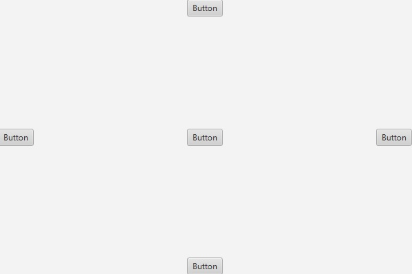
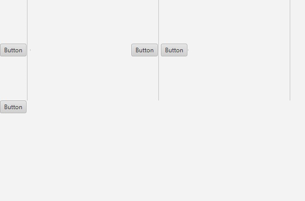
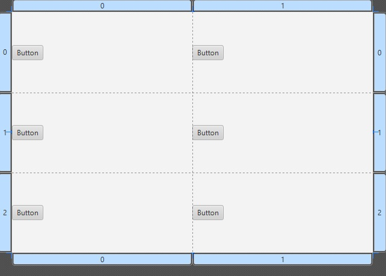

The AnchorPane layout pane enables you to anchor nodes to the top, bottom, left side, right side, or center of the pane. As the window is resized, the nodes maintain their position relative to their anchor point.
BorderPane lays out children in top, left, right, bottom, and center positions. The top and bottom children will be resized to their preferred heights and extend the width of the borderpane. The left and right children will be resized to their preferred widths and extend the length between the top and bottom nodes. And the center node will be resized to fill the available space in the middle. Any of the positions may be null. Here is an example of the BorderPane layout:
The nodes within a FlowPane layout pane are laid out consecutively and wrap at the boundary set for the pane. Nodes can flow vertically (in columns) or horizontally (in rows). A vertical FlowPane wraps at the height boundary for the pane. A horizontal FlowPane wraps at the width boundary for the pane. Here is an example of the FlowPlane layout:
Notice how the the buttons and separators laid out on the plane are consecutive and wrap once the end of the window is reached.
The GridPane layout pane enables you to create a flexible grid of roturws and columns in which to lay out nodes. Nodes can be placed in any cell in the grid and can span cells as needed. A grid pane is useful for creating forms or any layout that is organized in rows and columns. Here is an example of a 2x3 GridPane layout:
The StackPane layout pane places all of the nodes within a single stack with each new node added on top of the previous node. This layout model provides an easy way to overlay text on a shape or image or to overlap common shapes to create a complex shape.